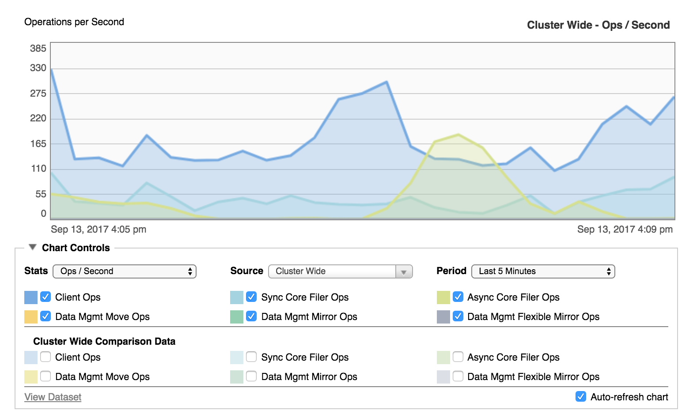
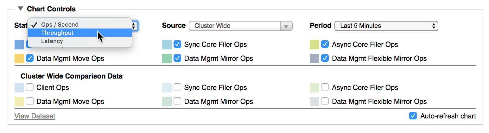
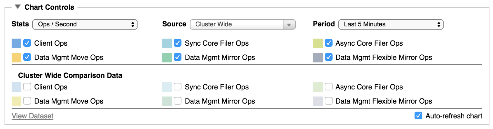
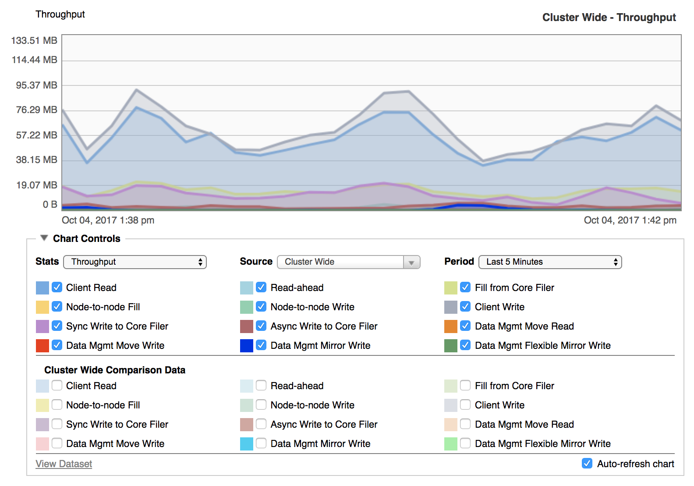
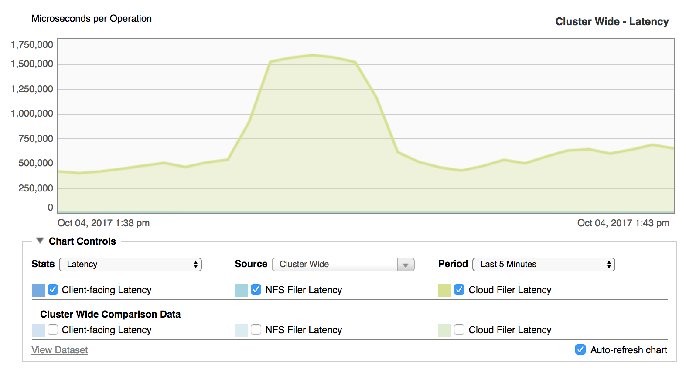
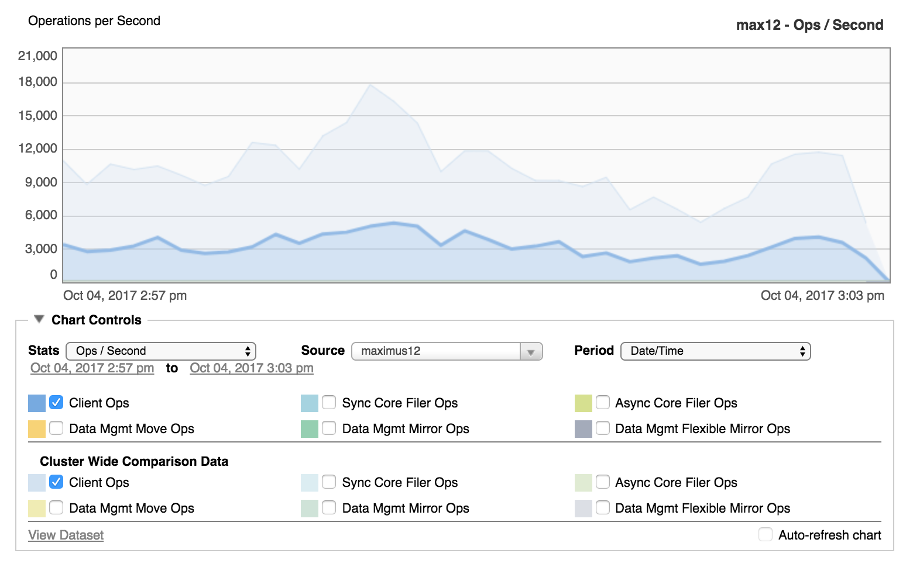
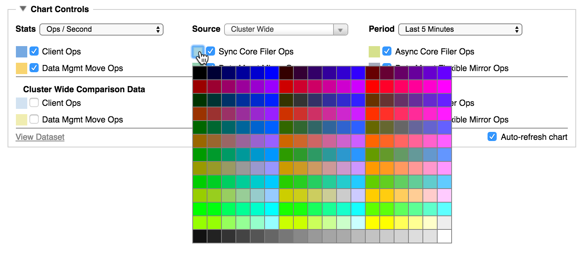
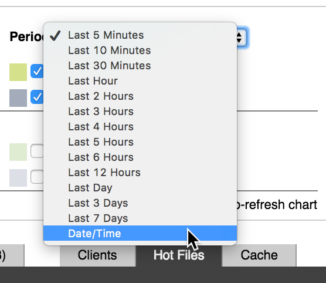
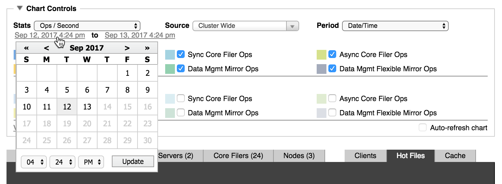

Viewing System Performance¶
The graph in the center of the Dashboard page gives a visual overview of the Avere cluster’s performance.
{kind=link}
The screenshot above shows a performance graph with its default settings. You can change the settings to focus on what you want to see.
Chart controls are hidden by default; click the triangular control at the left of the Chart Controls label to open this panel.
The controls give you the following options for customizing the visualization:
The Stats menu sets the type of statistic (rate, throughput, or latency). Read Choosing the Statistics to Display for details.
The Source menu determines which part of the cluster to include – for example, a particular node or vserver, or the entire cluster. Read Statistics Source Options for details.
The Period menu controls the time frame shown on the chart – values range from five minutes (the default) to the past week, or you can set a custom time period. Read Setting the Time Range for more.
Checkboxes let you show or hide individual statistics in the chart. These items are different depending on which statistic you selected – for example, when displaying operations per second you can choose which types of operations to graph. Read below for details:
Two sets of checkboxes appear – the upper set controls the statistics display for the item selected in Source and the lower set displays the same statistics at the cluster level. This arrangement allows you to display the same statistic for the chosen component (for example, one node or one core filer) and also for the cluster as a whole. Read Comparison Statistics for an example.
You can customize the display colors assigned to each item.
You can turn auto-refresh off or on.
There also is a link to view a CSV version of the data on the graph.
Choosing the Statistics to Display¶
Use the Stats drop-down menu to select the statistic displayed on the chart.
{kind=link}
Choices include:
Ops/Second – Shows the number of operations the selected source (cluster, vserver, node, or core filer) is making each second.
The options for this selection are described in Graphing Options for Ops/Second.
Throughput – Shows how much data is being successfully transferred for the selected source. Read Graphing Options for Throughput to learn more.
Latency – Shows delay in the system. See Graphing Options for Latency for more information.
Graphing Options for Ops/Second¶
When displaying operations per second, you can choose to show a variety of operations on the graph.
{kind=link}
Options include:
Client Ops – Total operations exchanged between clients and the Avere cluster.
Sync Core Filer Ops – Synchronous operations from the cluster to the core filer.
Async Core Filer Ops – Asynchronous operations from the cluster to the core filer.
Data Mgmt Move Ops – During a FlashMove or FlashMirror job, this statistic tracks operations that are part of copying data from the source core filer to the destination core filer.
Data Mgmt Mirror Ops – Operations done as part of a FlashMirror job to write client changes to both the primary and mirror destination.
Data Mgmt Flexible Mirror Ops – Operations done as part of re-synchronizing a FlashMirror job after data was not written to both the primary and mirror destination (for example, if one of the volumes became unreachable). These operations only appear for FlashMirror jobs that use a flexible synchronization policy; a strict synchronization policy does not allow the volumes to go out of sync.
Additional information about FlashMirror and synchronization policies is included in the FlashMirror In Depth section of the Avere OS Data Management Guide.
Graphing Options for Throughput¶
Throughput shows the amount of data being successfully communicated over the cluster’s network connections.
Throughput statistics tell you how well communication is flowing among the clients, the cluster, and the core filers.
{kind=link}
The chart displays how many bytes of data are being transferred. You can customize the settings to show data from specific types of operations.
The Throughput chart can graph the amount of data transferred in any or all of these categories:
Client Read – Data involved in read operations from clients to the cluster.
Read-ahead – Data from read-ahead operations. Read-ahead operations are reads from the cluster to its core filers in anticipation of client requests. If the system predicts that a client will request content that is not currently in the cache, it can fetch the content from the core filer before the client requests it. Requesting data ahead of time speeds up data access for client requests.
Fill from Core Filer – Data transferred in read operations from the cluster to a core filer. These operations occur when clients request access to data that is not already cached on the cluster nodes.
Node-to-node Fill – Data from read operations between cluster nodes. Avere OS distributes data across the cluster to optimize performance and balance load.
Node-to-node Write – Data transferred in write operations between cluster nodes. These operations are most frequently used to direct client-changed data to the appropriate node. This type of operation is most often seen on systems with the Always Forward feature enabled.
Client Write – Data written from clients to the cluster.
Sync Write to Core Filer – Data written synchronously from the cluster to a core filer. Synchronous write operations are used when a client changes data and the core filer does not have write caching enabled.
When a core filer’s caching mode is set to Read, the cluster sends write operations from clients directly to the core filer. (Caching mode is part of a Cache Policy – read Core Filer > Manage Cache Policies in the Avere OS Settings Guide for more information.)
Async Write to Core Filer – Data transferred in asynchronous write operations from the cluster to a core filer. Asynchronous write operations are used with core filers that have read/write caching set in their cache policies. Read Core Filer > Manage Cache Policies in the Avere OS Settings Guide for more information.
Data Mgmt Move Read – Data read from the source core filer when synchronizing the source and destination core filers in a FlashMove or FlashMirror job.
Data Mgmt Move Write – Data written to the destination core filer when synchronizing the source and destination core filers in a FlashMove or FlashMirror job.
Data Mgmt Mirror Write – Data from client write operations that was written to both the source and destination core filer in a FlashMove or FlashMirror job.
Data Mgmt Flexible Mirror Write – Data written while resynchronizing a source and destination core filer (for example, after one volume became unreachable). This statistic appears only for FlashMirror jobs that use a flexible synchronization policy; the strict synchronization policy does not allow the volumes to go out of sync.
Read the FlashMirror In Depth section of the Avere OS Data Management Guide for more information about FlashMirror and synchronization policies.
Graphing Options for Latency¶
Latency represents the lag time between when an operation is requested and when it begins to be fulfilled. Latency can be caused by network communication time, hardware operational speed, and other factors.
The chart shows latency in units of microseconds per operation.
{kind=link}
Choose Latency to graph any of the following statistics:
- Client-facing Latency – Latency for operations between clients and the cluster.
- NFS Filer Latency – Latency for operations between the cluster and a hardware NAS core filer.
- Cloud Filer Latency – Latency for operations between the cluster and a cloud object store.
Statistics Source Options¶
Use the Source drop-down list to choose the element of the system to include on the graph.
Options include:
- Cluster Wide for combined statistics for all vservers, core filers, and nodes in the cluster.
- VServers > [vserver_name] for statistics from the selected virtual server.
- Core Filer > [core_filer_name] for statistics from the selected core filer.
- Nodes > [node_name] for statistics from the selected node.
Comparison Statistics¶
If you are viewing statistics for a component of the cluster – for example, you chose a particular node in the Source selector – you can also show the cluster’s statistics on the same chart.
This feature allows you to compare performance between the cluster and the individual cluster element selected.
A second set of checkboxes with the label Cluster Wide Comparison Data appears below the main options. Select the statistics that you want to show.
{kind=link}
The screenshot above shows the client operations per second for a particular node in dark blue and the client operations per second for the cluster as a whole in light blue. The most drastic difference between the two curve shapes occurs just left of the center of the chart, where the cluster operations per second forms a tall peak, but the node’s curve is much flatter. This difference might indicate that a period of high demand on the cluster was handled by other nodes.
Disabling Auto-Refresh¶
By default, the chart updates automatically. The visualization updates every 30 seconds for users with read-only access to the Avere Control Panel, and every 10 seconds for users with read/write access.
To disable automatic updating, clear the Auto-refresh chart checkbox, which appears at the bottom right of the chart controls section.
You can disable and re-enable it at any time.
Customizing Graph Colors¶
You can change the color shown for a statistic by clicking the colored square next to the statistic’s name in the Chart Controls area. A color chooser pops up, and you can click on a new color to select it.
{kind=link}
If you want to close the color selector without changing the color, click a blank area in the Chart Controls panel.
Setting the Time Range¶
The Period drop-down list lets you customize the time period over which to display statistics. Choices range from the last five minutes to the last seven days, or you can set a customized time range for specific dates and times.
{kind=link}
Setting a Custom Time Range¶
To set a custom time range:
On the Period list, select Date/Time.
A time range will appear below the selection menus.
Click the start date on the time range and use the pop-up control to select the day and time at the beginning of the range you want. Click the Submit button.
Repeat the process to customize the end date and time.
{kind=link}
After you click Submit, the graph updates with data from the selected range. Using a custom time range automatically disables the chart’s automatic refresh option.
Note that data might not be available for the entire range you have selected. Avere OS keeps only seven full days of statistics; data beyond that range is purged from the system and cannot be displayed in the dashboard. (Consider a third-party solution if you want to examine statistics over a longer time period.) Also, a few statistics are automatically reset by a system restart, so if the date range includes a restart these values will only represent the period after the restart.
Viewing the Dataset¶
You can view and save the currently displayed set of statistics in comma-separated value (CSV) format.
Click the View Dataset link that appears at the bottom left of the Chart Controls area. A separate browser window or tab opens with the CSV-formatted statistics displayed in text. Use your browser’s “Save As” function to save the statistics to a file.